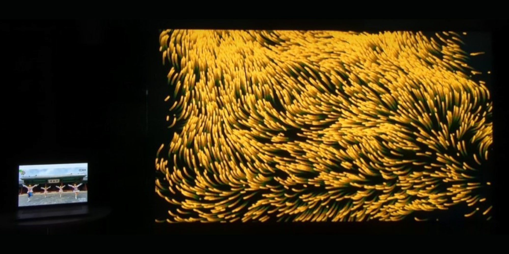
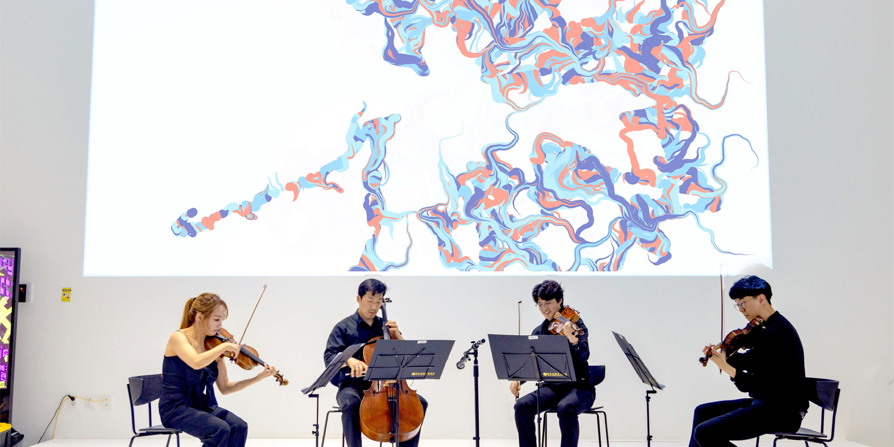
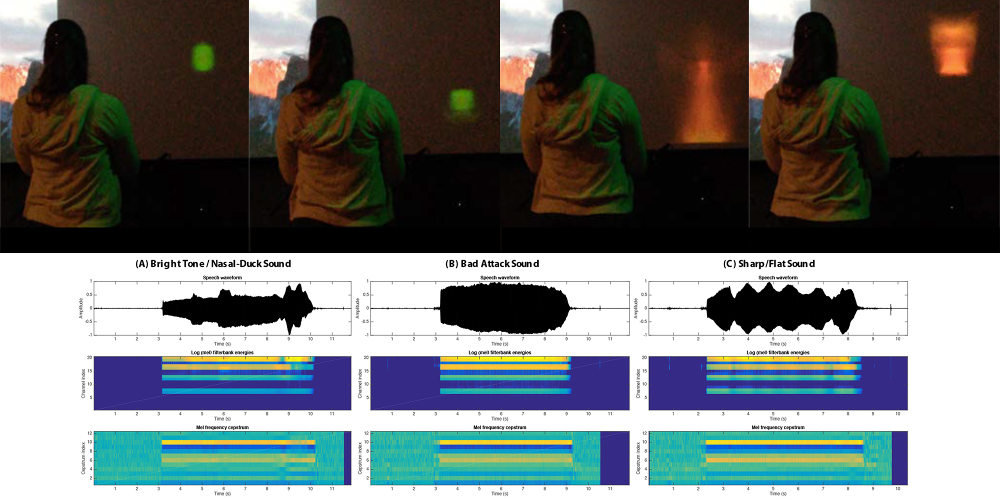
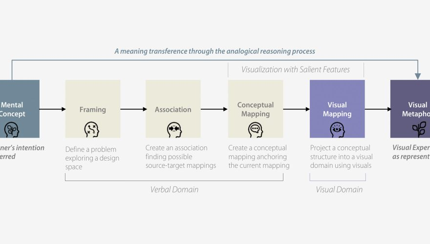
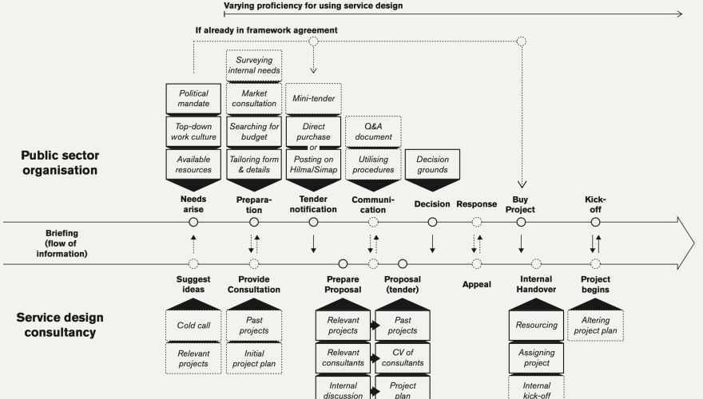

 CheerUp: A Real-time Ambient Visualization of Cheerleading Pose Similarity, IUI 2023 EXPC Lab Posted on March 27, 2023
 Toward a Non-Fungible Experience: The Emerging Media Art Performance of Eine Kleine Nachtmusik, SIGGRAPH Asia 2022 EXPC Lab Posted on December 6, 2022
 Designing an Intelligent Learning System For Practicing the Oboe Embouchure, UBICOMP 2022 EXPC Lab Posted on September 11, 2022
 Toward Deeper Understandings of the Cognitive Role of Visual Metaphors in Emerging Media Art Practices, DRS 2020 EXPC Lab Posted on August 11, 2020
 Contexts of briefing for service design procurements in the Finnish public sector, Design Studies 2020 New Design Studio Posted on June 12, 2020